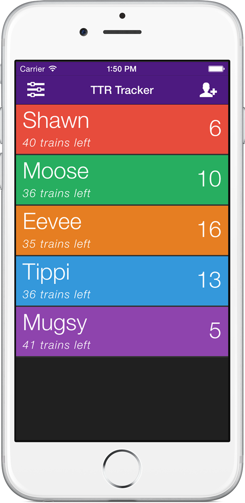
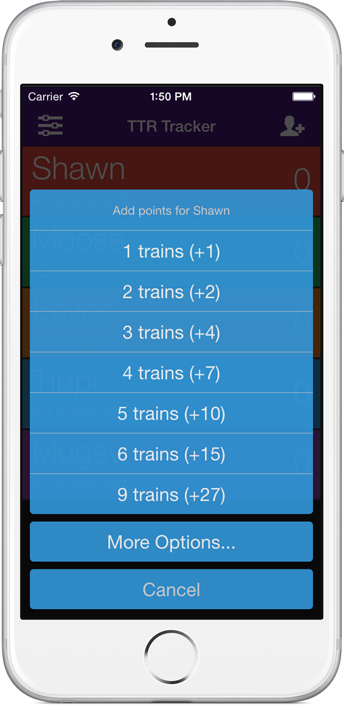
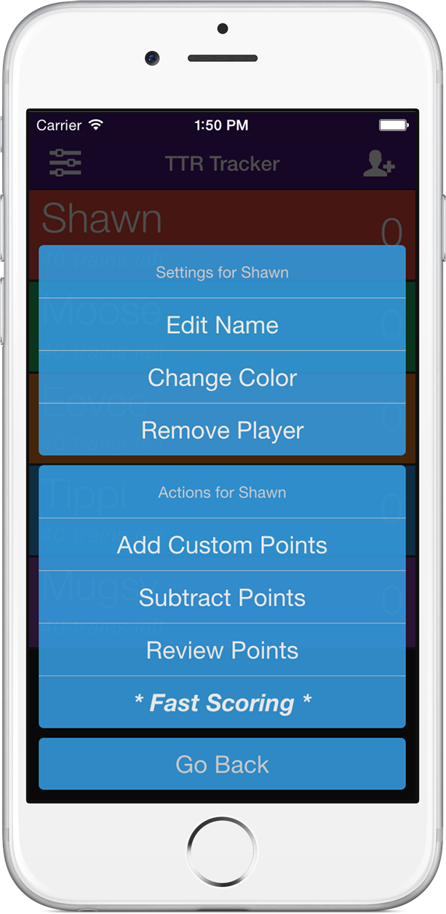
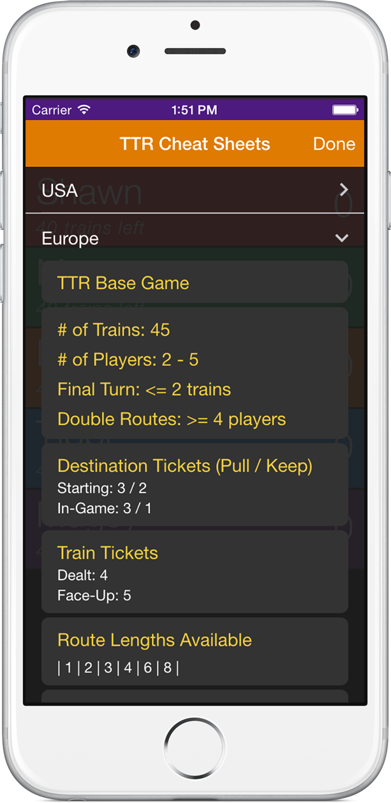

Features:
- Able to add any number of players and specify their train color.
- Able to set and track the number of remaining trains per player based on the version of TTR you're playing (Custom version included as well).
- Able to add point based on number of trains laid.
- When a TTR version is selected, only the respective route lengths are displayed.
- Able to add/subtract custom values for dynamic scoring.
- Able to review & clear scores for the current game.
- TTR "Cheat Sheets" for all versions. Now you don't need to dig around for rulebooks because you forgot how many trains to start with or what bonuses are available for a particular version.
- "Fast Scoring" option so that you can quickly add up individual's trains quickly and efficiently.
Screenshots:



